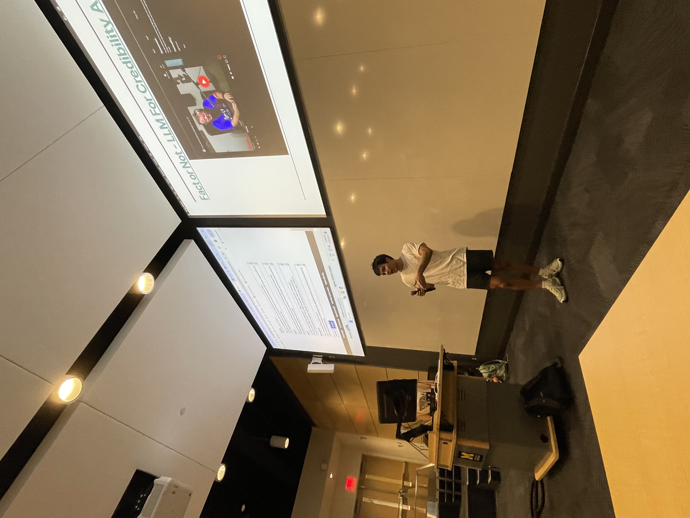

About
I am interested in modern distributed systems, databases internals, compilers, and ML/AI systems. I enjoy working on scalable and reliable softwares. Nowadays, I mainly program in Go and C++.
I am currently studying at the University of Michigan, pursuing a B.S. in Computer Science.
I was fortunate to be part of two amazing student organizations at UM. I was a VP at MDST, the largest data science club at the university, and a member of V1, a top community for ambitious student builders.
I had the opportunity to intern at several different places during my 4 years of college. I learned so much from these experiences and will be forever grateful for them.
Work Experience
-
Software Engineering Intern — Tesla
Worked on the Cell Software Team where I developed the highly scalable and reliable MES (Manufacturing Execution System) for Tesla cell and battery production. -
Software Engineering Intern — Amazon Web Services
Worked on the Access Management Systems team and built internal security tools used across all Amazon organizations for access controls and user permissions management. -
Software Engineer Coop — G2
Designed and developed AI chatbot agents for the review platform to help users write better reviews more quickly and effortlessly.
Beyond school and work, I enjoy playing many sports: basketball, tennis, bowling, golf... I also like to hike and watch movies. These passions keep my life balanced.
